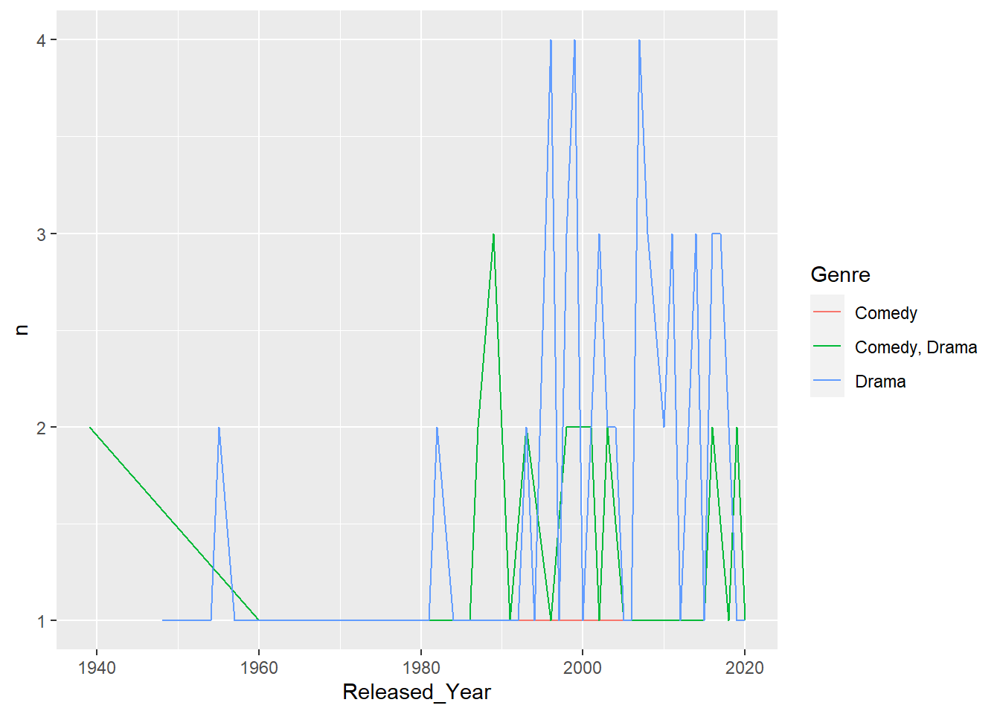
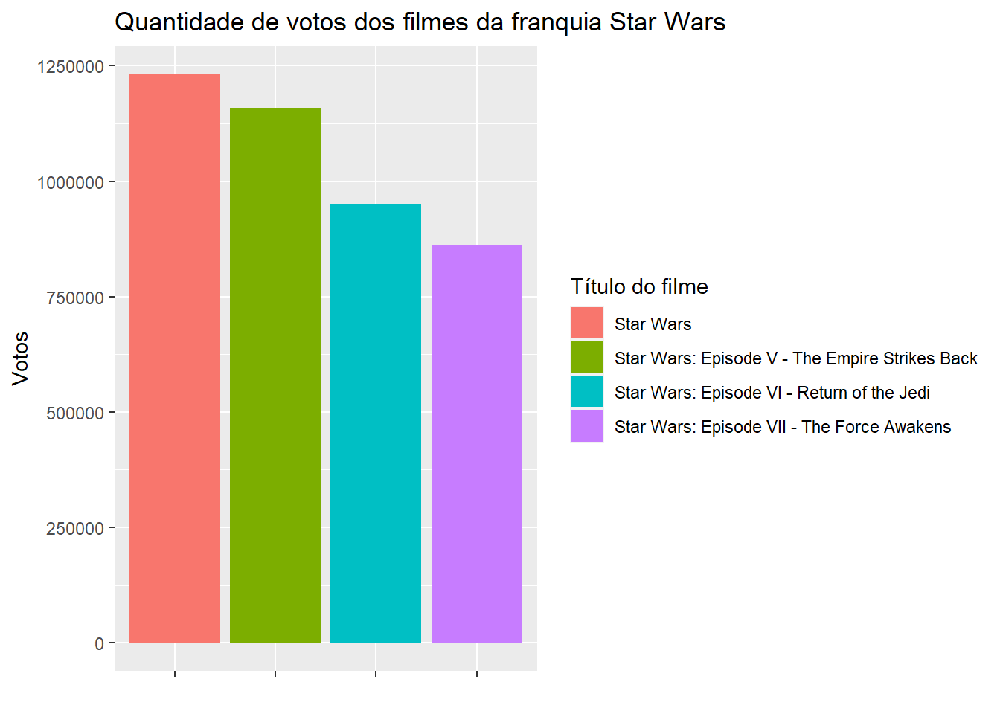

UFSCar - Universidade Federal de São Carlos
ACIEPE - Introdução à Ciência de Dados Usando R
Lista 1
Em: 21/03/2022
Gabarito da lista 1 do Prof. Dr. Anderson C. Carniel (UFSCar) e Audreih Ferreira dos Santos (UFSCar) com anotações e layout de Ariane Hayana
Para cada questão da Lista de Exercícios 1 é fornecida uma possível solução de resposta. Lembrando que é possível construir outras soluções para resolver a mesma questão e o intuito aqui é apenas mostrar alguns caminhos de resolução.
Construa uma função em R que recebe quatro vetores de valores numéricos como entrada (x1, x2, y1, y2), representando pontos bidimensionais no plano (e.g., o ponto A pode ser visto como A(x1[1], y1[1]) e o ponto B como B(x2[1], y2[1])). Sua função deve retornar um vetor de valores numéricos com o valor da distância Euclideana entre cada ponto dos vetores informados como parâmetros. A fórmula que efetua tal cálculo é:
\[\begin{align} d = \sqrt{(x2 - x1)^2 + (y2 - y1)^2} \end{align}\]
Possíveis soluções:
A solução a seguir é baseada no estruturas de repetição:
#Criando a função
distancia_euclideana <- function(x1, x2, y1, y2){
#CORPO DA FUNÇÃO
v_distancias <- c()
#Calculando as distâncias
for(i in 1:length(x1)){
distancia <- sqrt(((x2[i]-x1[i])^2)+((y2[i]-y1[i])^2))
v_distancias <- append(v_distancias, distancia)
}
#Definindo o retorno da função
v_distancias
}Porém, a solução anterior não explora a real vantagem da vetorização que a linguagem R proporciona, fazendo com que o cálculo de equações sobre conjunto de valores fique muito mais simples. Por exemplo, a solução do exercício é:
#Criando a função
distancia_euclid_simples <- function(x1, x2, y1, y2){
sqrt((x2 - x1)^2 + (y2 - y1)^2)
}Testando as soluções (somente esse exercício apresenta casos de teste; porém, é recomendado que você construa seus próprios casos de testes para todos os exercícios da lista):
x1 <- c(1, 2, 3, 4)
x2 <- c(4, 5, 6, 7)
y1 <- c(0, 4, 5, 9)
y2 <- c(10, 11, 12, 13)
distancia_euclideana(x1, x2, y1, y2)[1] 10.440307 7.615773 7.615773 5.000000distancia_euclid_simples(x1, x2, y1, y2)[1] 10.440307 7.615773 7.615773 5.000000Escreva uma função em R que recebe como parâmetro um valor inteiro que representa um valor monetário em reais e calcula o menor número possível de notas de 100, 50, 10, 5 e 2 e moedas de 1 real em que o valor lido pode ser decomposto. Sua função deve retornar a relação de notas e moedas necessárias como uma lista nomeada. Além disso, sua função deve emitir um erro quando o parâmetro não for um número inteiro.
Possíveis soluções:
decompondo_notas <- function(valor){
# checando se o valor informado é um inteiro
is.wholenumber <- function(x, tol = .Machine$double.eps^0.5) abs(x - round(x)) < tol
if (!is.wholenumber(valor)) {
stop("O valor inserido não é um número inteiro!")
}
#Inicializando as variáveis necessárias
notas <- c(100, 50, 10, 5, 2, 1)
quantidades <- rep(0, 6)
contador <- 1
#Processo de decomposição
for (cedula in notas){
auxiliar <- valor %/% cedula
if (auxiliar > 0){
quantidades[contador] <- auxiliar
valor <- valor - auxiliar * cedula
}
contador <- contador + 1
}
#Construindo a lista com os resultados
list(`Notas de 100` = quantidades[1], `Notas de 50` =
quantidades[2],
`Notas de 10` = quantidades[3], `Notas de 5` =
quantidades[4],
`Notas de 2` = quantidades[5], `Notas de 1` =
quantidades[6])
}
# alguns casos de teste:
decompondo_notas(354)$`Notas de 100`
[1] 3
$`Notas de 50`
[1] 1
$`Notas de 10`
[1] 0
$`Notas de 5`
[1] 0
$`Notas de 2`
[1] 2
$`Notas de 1`
[1] 0decompondo_notas(12)$`Notas de 100`
[1] 0
$`Notas de 50`
[1] 0
$`Notas de 10`
[1] 1
$`Notas de 5`
[1] 0
$`Notas de 2`
[1] 1
$`Notas de 1`
[1] 0# decompondo_notas(2.5) ## erro aqui
## Error in decompondo_notas(2.5): O valor inserido não é um número inteiro!Construa uma função em R que recebe um data.frame (ou tibble) como parâmetro e retorna TRUE caso o data.frame atende as restrições do Jogo Sudoku ou FALSE caso contrário. Primeiro, é necessário validar a entrada. Somente data.frame com 9 linhas e 9 colunas contendo valores numéricos são checados; caso qualquer outro tipo de dado for retornado, sua função deve emitir um erro. Posteriormente, sua função deve checar se os valores informados atendem às restrições Sudoku:
O data.frame é constituído de sub-grades de 3x3 chamadas de “regiões” a. Cada coluna do data.frame deve ter números de 1 a 9 apenas uma vez a. Cada linha do data.frame deve ter números de 1 a 9 apenas uma vez a. Cada região deve ter números de 1 a 9 apenas uma vez. a. Exemplo de Sudoku que satisfaz todas as restrições:
Possíveis soluções:
verifica_sudoku <- function(tabela){
#Verificando a dimensão da tabela
tab_valida <- nrow(tabela) == 9 && ncol(tabela) == 9
if (!tab_valida) stop("A tabela inserida não possui a dimensão necessária!")
#Removendo as linhas com valores NA. Manter o número de linhas caso não tenha nenhum
tabela <- na.exclude(tabela)
tab_valida <- nrow(tabela) == 9
if (tab_valida){
for (coluna in tabela)
if (!is.numeric(coluna)) stop("A tabela possui valores de tipos não numéricos!")
}
else stop("Estão faltando alguns valores na tabela! (Presençaa de valores NA)")
#Retorno da verifica??o
tab_valida <- TRUE
#Criando os grupos de valores
grupos <- list(tabela[1:3, 1:3], tabela[1:3, 4:6],
tabela[1:3, 7:9],
tabela[4:6, 1:3], tabela[4:6, 4:6],
tabela[4:6, 7:9],
tabela[7:9, 1:3], tabela[7:9, 4:6],
tabela[7:9, 7:9])
#Inicializando uma variável auxiliar
pos <- 1
#Verificando as condições necessárias para a solução do sudoku
for (coluna in tabela){
#Verificando as colunas
verifica_col <- coluna %in% c(1:9)
verifica_col <- all(verifica_col)
verifica_col <- verifica_col &&
sum(unique(coluna)) == 45
#Verificando as linhas
linha <- tabela[pos,]
verifica_linha <- linha %in% c(1:9)
verifica_linha <- all(verifica_linha)
verifica_linha <- verifica_linha && sum(unique(linha)) == 45
#Verificando os grupos
verificar_grupo <- as.matrix(grupos[[pos]]) %in% c(1:9)
verificar_grupo <- all(verificar_grupo)
verificar_grupo <- verificar_grupo &&
sum(unique(grupos[[pos]])) == 45
pos <- pos + 1
if (!verifica_linha || !verifica_col || !verificar_grupo){
tab_valida <- FALSE
break;
}
}
tab_valida
}Considerando o mesmo contexto do exercício anterior (Sudoku), considere que o data.frame possa conter um valor -1 em alguma de suas células. Construa uma função em R que detecta esse valor -1 e então completa com o valor correto, conforme as restrições do Sudoku. Sua função deve retornar o data.frame completado.
Possíveis soluções:
sudoku_menos1<- function(tabela){
#Verificando a dimensão da tabela
tab_valida <- nrow(tabela) == 9 && ncol(tabela) == 9
if (!tab_valida) stop("A tabela inserida não possui a dimensão necessária!")
#Removendo as linhas com valores NA. Manter o número de linhas caso não tenha nenhum
tabela <- na.exclude(tabela)
tab_valida <- nrow(tabela) == 9
if (tab_valida){
for (coluna in tabela)
if (!is.numeric(coluna)) stop("A tabela possui valores de tipos não numéricos!")
}
else stop("Estão faltando alguns valores na tabela! (Presença de valores NA)")
#Retorno da verificação
tab_valida <- TRUE
#Criando os grupos de valores
grupos <- list(tabela[1:3, 1:3], tabela[1:3, 4:6],
tabela[1:3, 7:9],
tabela[4:6, 1:3], tabela[4:6, 4:6],
tabela[4:6, 7:9],
tabela[7:9, 1:3], tabela[7:9, 4:6],
tabela[7:9, 7:9])
#Inicializando as variáveis necessárias
loc <- 1
soma_menos1 <- 0
pos <- 1
#Verificando as condições necessárias para a solução do sudoku
for (coluna in tabela){
#Verificando as colunas
verifica_col <- coluna %in% c(1:9, -1)
verifica_col <- all(verifica_col)
soma <- sum(unique(coluna))
verifica_menos1 <- between(soma, 35, 43)
verifica_col <- verifica_col && (verifica_menos1
|| soma == 45)
if (verifica_menos1){
loc <- pos
soma_menos1 <- soma
}
#Verificando as linhas
linha <- tabela[pos,]
verificar_linha <- linha %in% c(1:9, -1)
verificar_linha <- all(verificar_linha)
soma <- sum(unique(linha))
verificar_linha <- verificar_linha && (between(soma, 35, 43) || soma == 45)
#Verificando os grupos
verificar_grupo <- as.matrix(grupos[[pos]]) %in% c(1:9, -1)
verificar_grupo <- all(verificar_grupo)
soma <- sum(unique(grupos[[pos]]))
verificar_grupo <- verificar_grupo && (between(soma, 35, 43) || soma == 45)
pos <- pos + 1
if (!verificar_linha || !verifica_col || !verificar_grupo){
tab_valida <- FALSE
break;
}
}
#Executando a substituição do -1
if (tab_valida){
preenchido <- tabela
nome_antigo <- names(preenchido)[loc]
names(preenchido)[loc] <- "col2"
preenchido$col2[preenchido$col2 == -1] <- 44 -
soma_menos1
names(preenchido)[loc] <- nome_antigo
preenchido
}
else {
warning("A substituição não foi realizada! (parâmetros inválidos)")
}
}As próximas questões são referentes ao conjunto de dados fornecido. Ele é oriundo do https://www.kaggle.com/harshitshankhdhar/imdb-dataset-of-top-1000-movies-and-tv-shows/version/1 e contém os mil filmes e programas de TV mais bem avaliados no IMDB. Para cada questão, forneça o código R necessário para recuperar o que está sendo requerido (usando o tidyverse). ATENÇÃO: Diversas descrições sobre o conjunto de dados são fornecidas nas descrições das questões. Use-as para formular suas respostas (de maneira geral)!
Carregando o arquivo .csv:
library(tidyverse)
top_1000_IMBD <- read_csv("imdb_top_1000.csv")a) Recupere os filmes do gênero Drama (note que um filme pode ter vários gêneros).
Possíveis soluções:
filmes_IMDB_drama <- filter(top_1000_IMBD, str_detect(Genre, "Drama"))
filmes_IMDB_drama# A tibble: 724 x 16
Poster_Link Series_Title Released_Year Certificate Runtime Genre IMDB_Rating
<chr> <chr> <chr> <chr> <chr> <chr> <dbl>
1 https://m.m~ The Shawsha~ 1994 A 142 min Drama 9.3
2 https://m.m~ The Godfath~ 1972 A 175 min Crim~ 9.2
3 https://m.m~ The Dark Kn~ 2008 UA 152 min Acti~ 9
4 https://m.m~ The Godfath~ 1974 A 202 min Crim~ 9
5 https://m.m~ 12 Angry Men 1957 U 96 min Crim~ 9
6 https://m.m~ The Lord of~ 2003 U 201 min Acti~ 8.9
7 https://m.m~ Pulp Fiction 1994 A 154 min Crim~ 8.9
8 https://m.m~ Schindler's~ 1993 A 195 min Biog~ 8.9
9 https://m.m~ Fight Club 1999 A 139 min Drama 8.8
10 https://m.m~ The Lord of~ 2001 U 178 min Acti~ 8.8
# ... with 714 more rows, and 9 more variables: Overview <chr>,
# Meta_score <dbl>, Director <chr>, Star1 <chr>, Star2 <chr>, Star3 <chr>,
# Star4 <chr>, No_of_Votes <dbl>, Gross <dbl>b) Recupere os filmes estrelados por Morgan Freeman (colunas Star1, Star2, Star3 e Star4 indicam as entrelas de cada filme). Ordene-os pelo ano de lançamento.
filmes_Freeman <- filter(top_1000_IMBD,
str_detect(Star1, "Morgan Freeman")
| str_detect(Star2, "Morgan Freeman")
| str_detect(Star3, "Morgan Freeman")
| str_detect(Star4, "Morgan Freeman"))
filmes_Fremman_ano <- arrange(filmes_Freeman, Released_Year)
filmes_Fremman_ano# A tibble: 7 x 16
Poster_Link Series_Title Released_Year Certificate Runtime Genre IMDB_Rating
<chr> <chr> <chr> <chr> <chr> <chr> <dbl>
1 https://m.me~ Glory 1989 R 122 min Biog~ 7.8
2 https://m.me~ Unforgiven 1992 A 130 min Dram~ 8.2
3 https://m.me~ The Shawsha~ 1994 A 142 min Drama 9.3
4 https://m.me~ Se7en 1995 A 127 min Crim~ 8.6
5 https://m.me~ Million Dol~ 2004 UA 132 min Dram~ 8.1
6 https://m.me~ Lucky Numbe~ 2006 R 110 min Acti~ 7.7
7 https://m.me~ Gone Baby G~ 2007 R 114 min Crim~ 7.6
# ... with 9 more variables: Overview <chr>, Meta_score <dbl>, Director <chr>,
# Star1 <chr>, Star2 <chr>, Star3 <chr>, Star4 <chr>, No_of_Votes <dbl>,
# Gross <dbl>c) Recupere a média do IMDB_Rating dos filmes dirigidos pelo Christopher Nolan.
filmes_media_Nolan <- filter(top_1000_IMBD, Director == "Christopher Nolan") %>%
summarise(média = mean(IMDB_Rating, na.rm = TRUE))
filmes_media_Nolan# A tibble: 1 x 1
média
<dbl>
1 8.46d) Recupere os 5 melhores filmes (conforme o IMDB_Rating) estrelados pelo Brad Pitt. Dica: use a função head() para capturar apenas uma quantidade máxima de linhas de um data.frame (por exemplo, head(df, n = 5) retorna as 5 primeiras linhas de df).
melhores_filmes_Brad_Pitt <- filter(top_1000_IMBD,
str_detect(Star1, "Brad Pitt")
|str_detect(Star2, "Brad Pitt")
|str_detect(Star3, "Brad Pitt")
|str_detect(Star4, "Brad Pitt")) %>%
arrange(desc(IMDB_Rating)) %>% head(n = 5)
melhores_filmes_Brad_Pitt# A tibble: 5 x 16
Poster_Link Series_Title Released_Year Certificate Runtime Genre IMDB_Rating
<chr> <chr> <chr> <chr> <chr> <chr> <dbl>
1 https://m.me~ Fight Club 1999 A 139 min Drama 8.8
2 https://m.me~ Se7en 1995 A 127 min Crim~ 8.6
3 https://m.me~ Inglourious~ 2009 A 153 min Adve~ 8.3
4 https://m.me~ Snatch 2000 UA 104 min Come~ 8.3
5 https://m.me~ 12 Years a ~ 2013 A 134 min Biog~ 8.1
# ... with 9 more variables: Overview <chr>, Meta_score <dbl>, Director <chr>,
# Star1 <chr>, Star2 <chr>, Star3 <chr>, Star4 <chr>, No_of_Votes <dbl>,
# Gross <dbl>e) Recupere o ano de lançamento médio e número médio de votos dos filmes de Ação.
# o enunciado na verdade, leva a esse tipo de resposta
media_filmes_acao <- filter(top_1000_IMBD, str_detect(Genre, "Action")) %>%
summarize(média_ano = mean(as.numeric(Released_Year), na.rm = TRUE),
média_votos = mean(No_of_Votes, na.rm = TRUE))
media_filmes_acao# A tibble: 1 x 2
média_ano média_votos
<dbl> <dbl>
1 1998. 404172.#entretanto, o esperado é:
media_filmes_acao <- filter(top_1000_IMBD, str_detect(Genre, "Action")) %>%
group_by(Released_Year) %>%
summarize(média_votos = mean(No_of_Votes, na.rm = TRUE))
media_filmes_acao# A tibble: 61 x 2
Released_Year média_votos
<chr> <dbl>
1 1924 41985
2 1926 81156
3 1932 25312
4 1938 47175
5 1948 32581
6 1949 29807
7 1954 315744
8 1959 56305
9 1960 87719
10 1961 111244
# ... with 51 more rowsf) Mostre em um gráfico de linha, a quantidade de filmes de Drama e Comedy que foram lançados por ano (considerando todos os anos e que cada linha é um gênero de filme diferente: Drama / Comedy / Drama + Comedy). Assuma que os filmes sejam apenas dos gêneros mencionados! Formate o eixo x para que ele fique legível. Dica: procure pela função count() do dplyr.
imdb_genres <- count(top_1000_IMBD, Genre, Released_Year) %>% arrange(desc(n), Released_Year) %>%
filter(Genre %in% c('Drama', 'Comedy', 'Comedy, Drama'))
imdb_genres$Released_Year <- as.numeric(imdb_genres$Released_Year)
ggplot(data = imdb_genres) + geom_line(mapping = aes(x = Released_Year, y = n, group = Genre, color = Genre))
g) Mostre em um gráfico de barras, o número de votos que cada filme da franquia do Star Wars recebeu (neste caso, cada barra refere-se a um filme da franquia).
votos_SW <- filter(top_1000_IMBD, str_detect(Series_Title, "Star Wars")) %>%
select(Series_Title, No_of_Votes) %>%
ggplot(aes(x = Series_Title, y = No_of_Votes, fill =
Series_Title)) +
geom_bar(stat = "identity") +
ggtitle("Quantidade de votos dos filmes da franquia Star Wars")+
labs(x = "", y = "Votos")+
scale_fill_discrete(name="Título do filme")+
theme(axis.text.x = element_blank())
votos_SW